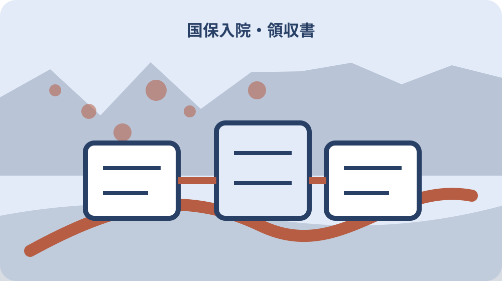

先に結論を確認する
この記事の答え：入院前に所得区分、マイナ保険証、食事代、暦月、申請書到着時期を一枚で確認したいため、対象、基準日、公式資料、未確認事項を最初の一行へ置きます。
森町で最初に照合する条件：森町公式の二つの異なる案内を2026-08-13に確認する
入院予定日を暦月ごとに分ける
『入院予定日を暦月ごとに分ける』を調べる場面では、入院予定日を暦月ごとに分けるでは、まず高額療養費は暦月の一日から末日までを一か月として計算します。『入院予定日を暦月ごとに分ける』を調べる場面では、この事実を出発点に、対象者・対象物・確認日を同じ行へ置きます。『入院予定日を暦月ごとに分ける』を調べる場面では、森町国保の入院費を限度額・食事代・申請月で分けるの判断を口頭だけで進めず、根拠となるページ名と更新日も併記してください。
『入院予定日を暦月ごとに分ける』を調べる場面では、公式案内の共通条件と、手元の個別事情を二列に分けます。『入院予定日を暦月ごとに分ける』を調べる場面では、高額療養費は暦月の一日から末日までを一か月として計算しますという根拠は左へ、入院予定日を暦月ごとに分けるでまだ調べる対象は右へ置き、ページ本文から読み取れない事情を補いません。
『入院予定日を暦月ごとに分ける』を調べる場面では、原資料の名称と確認日を記したら、数字・人名・物件番号を原文のまま転記します。『入院予定日を暦月ごとに分ける』を調べる場面では、年齢と所得区分を先に確認するへ移る前に、森町へ尋ねる質問を一つだけ決め、回答欄を空けて待ちます。
『入院予定日を暦月ごとに分ける』を調べる場面では、この節は、対象が一意に決まり、根拠URLへ戻れ、次の担当が読める状態で終了です。『入院予定日を暦月ごとに分ける』を調べる場面では、入院予定日を暦月ごとに分けるに未確認があれば、結論欄ではなく再確認日の欄を埋めます。
『入院予定日を暦月ごとに分ける』を調べる場面では、1番目の確認として『入院予定日を暦月ごとに分ける』を保存するときは、根拠となる『高額療養費は暦月の一日から末日までを一か月として計算します』と今回の対象を一本の線で結びます。『入院予定日を暦月ごとに分ける』を調べる場面では、資料の写しには取得日、個別メモには記入者、問い合わせ結果には回答日を付け、次に読む人が公式事実と家族の判断を取り違えない状態にしてください。
年齢と所得区分を先に確認する
『年齢と所得区分を先に確認する』用の一件表に、手元の書類を開いたら、年齢と所得区分を先に確認するに関係する名称、番号、日付を原文どおり写します。『年齢と所得区分を先に確認する』用の一件表に、略称や家族の呼び名へ置き換える前に、同じ医療機関でも入院と外来、医科と歯科は分けて計算しますという公式案内と一致する欄を見つけることが重要です。
『年齢と所得区分を先に確認する』用の一件表に、ここでは『同じ医療機関でも入院と外来、医科と歯科は分けて計算します』を確認線にします。『年齢と所得区分を先に確認する』用の一件表に、家族の記憶と公式記載が違うときは両方を残し、年齢と所得区分を先に確認するの判断材料として同じ意味に丸めないでください。
『年齢と所得区分を先に確認する』用の一件表に、書類の版、発行元、対象期間を余白へ書くと、後日の更新と区別できます。『年齢と所得区分を先に確認する』用の一件表に、続くマイナ保険証の利用可否を病院へ聞くで必要になる資料だけを抜き出し、原本の束は崩さず保管します。
『年齢と所得区分を先に確認する』用の一件表に、作業者は確認した日時と方法を署名代わりに残します。『年齢と所得区分を先に確認する』用の一件表に、年齢と所得区分を先に確認するの答えが出ない場合も、調査経路が見えるなら一段階は完了です。
『年齢と所得区分を先に確認する』用の一件表に、2番目の確認として『年齢と所得区分を先に確認する』を保存するときは、根拠となる『同じ医療機関でも入院と外来、医科と歯科は分けて計算します』と今回の対象を一本の線で結びます。『年齢と所得区分を先に確認する』用の一件表に、資料の写しには取得日、個別メモには記入者、問い合わせ結果には回答日を付け、次に読む人が公式事実と家族の判断を取り違えない状態にしてください。
マイナ保険証の利用可否を病院へ聞く
『マイナ保険証の利用可否を病院へ聞く』の対象について、この段階の要点は、入院時の食事代と差額ベッド代は高額療養費の対象外です。『マイナ保険証の利用可否を病院へ聞く』の対象について、対象外かもしれない情報まで結論に混ぜず、確認できた範囲を枠で囲みます。『マイナ保険証の利用可否を病院へ聞く』の対象について、次の窓口へ渡す際は、何を見て判断したかが一目で戻れる形にします。
『マイナ保険証の利用可否を病院へ聞く』の対象について、マイナ保険証の利用可否を病院へ聞くの判断は制度名ではなく対象の一致で行います。『マイナ保険証の利用可否を病院へ聞く』の対象について、入院時の食事代と差額ベッド代は高額療養費の対象外ですを参照しつつ、氏名・住所・年月・設備位置のうち記事に必要な識別子だけを確認票へ写します。
『マイナ保険証の利用可否を病院へ聞く』の対象について、窓口へ伝える文章は、現状、知りたいこと、持参できる資料の順に組み立てます。『マイナ保険証の利用可否を病院へ聞く』の対象について、資格確認書と資格情報を区別するへ渡す値を一つに絞ると、質問が別制度へ広がりません。
『マイナ保険証の利用可否を病院へ聞く』の対象について、確認済みには根拠資料、対象外には理由、未確認には連絡先を付けます。『マイナ保険証の利用可否を病院へ聞く』の対象について、三つの欄が埋まれば、マイナ保険証の利用可否を病院へ聞くを家族へ引き継げます。
『マイナ保険証の利用可否を病院へ聞く』の対象について、3番目の確認として『マイナ保険証の利用可否を病院へ聞く』を保存するときは、根拠となる『入院時の食事代と差額ベッド代は高額療養費の対象外です』と今回の対象を一本の線で結びます。『マイナ保険証の利用可否を病院へ聞く』の対象について、資料の写しには取得日、個別メモには記入者、問い合わせ結果には回答日を付け、次に読む人が公式事実と家族の判断を取り違えない状態にしてください。
資格確認書と資格情報を区別する
『資格確認書と資格情報を区別する』へ進む前に、資格確認書と資格情報を区別するを実行するときは、公式案内にある『マイナ保険証の利用で限度額を超える窓口支払を避けられる場合があります』を基準にします。『資格確認書と資格情報を区別する』へ進む前に、手続名が似ていても目的や起算日が違うため、一件の記録へ詰め込まず、証明・申請・現地確認を別行で管理します。
『資格確認書と資格情報を区別する』へ進む前に、『マイナ保険証の利用で限度額を超える窓口支払を避けられる場合があります』は全員に同じ結果を保証する文ではありません。『資格確認書と資格情報を区別する』へ進む前に、資格確認書と資格情報を区別するでは、公式条件に自分の対象が当てはまるかを一項目ずつ照合します。
『資格確認書と資格情報を区別する』へ進む前に、期限が見える資料には取得日も添えます。『資格確認書と資格情報を区別する』へ進む前に、次の限度額を保険診療分だけで考えるで古い数字を再利用しないよう、確認時点を日付で囲んでください。
『資格確認書と資格情報を区別する』へ進む前に、この場で決められない個別条件は窓口確認へ回します。『資格確認書と資格情報を区別する』へ進む前に、資格確認書と資格情報を区別するを推測で完了扱いにせず、回答者と回答日まで入った時点で確定にします。
『資格確認書と資格情報を区別する』へ進む前に、4番目の確認として『資格確認書と資格情報を区別する』を保存するときは、根拠となる『マイナ保険証の利用で限度額を超える窓口支払を避けられる場合があります』と今回の対象を一本の線で結びます。『資格確認書と資格情報を区別する』へ進む前に、資料の写しには取得日、個別メモには記入者、問い合わせ結果には回答日を付け、次に読む人が公式事実と家族の判断を取り違えない状態にしてください。
限度額を保険診療分だけで考える
『限度額を保険診療分だけで考える』の資料欄には、限度額を保険診療分だけで考えるでは、まず70歳未満の世帯合算は同月に一件21000円以上の負担が基準です。『限度額を保険診療分だけで考える』の資料欄には、この事実を出発点に、対象者・対象物・確認日を同じ行へ置きます。『限度額を保険診療分だけで考える』の資料欄には、森町国保の入院費を限度額・食事代・申請月で分けるの判断を口頭だけで進めず、根拠となるページ名と更新日も併記してください。
『限度額を保険診療分だけで考える』の資料欄には、まず70歳未満の世帯合算は同月に一件21000円以上の負担が基準ですを確認票の見出し下へ引用せず要約します。『限度額を保険診療分だけで考える』の資料欄には、その下に限度額を保険診療分だけで考えるの対象番号を置けば、一般案内と今回の一件を混同しにくくなります。
『限度額を保険診療分だけで考える』の資料欄には、写真や画面保存には撮影方向・取得日・ページ名を付けます。『限度額を保険診療分だけで考える』の資料欄には、食事代と差額室料を別欄にするで照合するとき、同名の別資料を開いても違いを見つけられます。
『限度額を保険診療分だけで考える』の資料欄には、確認済みの記録を付ける前に、別の家族が同じ対象へ到達できるか試します。『限度額を保険診療分だけで考える』の資料欄には、迷った箇所は限度額を保険診療分だけで考えるの備考へ戻し、判断語を削ります。
『限度額を保険診療分だけで考える』の資料欄には、5番目の確認として『限度額を保険診療分だけで考える』を保存するときは、根拠となる『70歳未満の世帯合算は同月に一件21000円以上の負担が基準です』と今回の対象を一本の線で結びます。『限度額を保険診療分だけで考える』の資料欄には、資料の写しには取得日、個別メモには記入者、問い合わせ結果には回答日を付け、次に読む人が公式事実と家族の判断を取り違えない状態にしてください。
食事代と差額室料を別欄にする
『食事代と差額室料を別欄にする』を照合するとき、手元の書類を開いたら、食事代と差額室料を別欄にするに関係する名称、番号、日付を原文どおり写します。『食事代と差額室料を別欄にする』を照合するとき、略称や家族の呼び名へ置き換える前に、多数回該当は過去十二か月に同じ世帯で支給が四回以上ある場合ですという公式案内と一致する欄を見つけることが重要です。
『食事代と差額室料を別欄にする』を照合するとき、食事代と差額室料を別欄にするで扱う公式事実は『多数回該当は過去十二か月に同じ世帯で支給が四回以上ある場合です』です。『食事代と差額室料を別欄にする』を照合するとき、これに該当しない家族事情や現場状態は、別紙の個別確認欄へ移して根拠の種類を分けます。
『食事代と差額室料を別欄にする』を照合するとき、原本、写し、ウェブ画面は証拠力も更新方法も違います。『食事代と差額室料を別欄にする』を照合するとき、入院と外来の計算単位を確認するへ進む際は、どの媒体を見たかまで記録してください。
『食事代と差額室料を別欄にする』を照合するとき、対象、時点、資料、次の連絡先が四点とも読めればこの節を閉じます。『食事代と差額室料を別欄にする』を照合するとき、食事代と差額室料を別欄にするの結論だけを書いたメモは引継ぎ資料にしません。
入院と外来の計算単位を確認する
『入院と外来の計算単位を確認する』の質問票で、この段階の要点は、高額療養費支給申請書は受診から早くて約二、三か月後に郵送されます。『入院と外来の計算単位を確認する』の質問票で、対象外かもしれない情報まで結論に混ぜず、確認できた範囲を枠で囲みます。『入院と外来の計算単位を確認する』の質問票で、次の窓口へ渡す際は、何を見て判断したかが一目で戻れる形にします。
『入院と外来の計算単位を確認する』の質問票で、資料上の条件を先に固定します。『入院と外来の計算単位を確認する』の質問票で、今回は高額療養費支給申請書は受診から早くて約二、三か月後に郵送されますが基準なので、入院と外来の計算単位を確認するに関係する手元資料へ同じ用語があるかを探します。
『入院と外来の計算単位を確認する』の質問票で、用語が一致しないときは勝手に言い換えず、双方の名称を並記します。『入院と外来の計算単位を確認する』の質問票で、世帯合算の支払を月別に集めるの窓口質問には、その差を短く添えます。
世帯合算の支払を月別に集める
『世帯合算の支払を月別に集める』の期限管理では、世帯合算の支払を月別に集めるを実行するときは、公式案内にある『資格情報のお知らせだけでは医療機関を受診できません』を基準にします。『世帯合算の支払を月別に集める』の期限管理では、手続名が似ていても目的や起算日が違うため、一件の記録へ詰め込まず、証明・申請・現地確認を別行で管理します。
『世帯合算の支払を月別に集める』の期限管理では、資格情報のお知らせだけでは医療機関を受診できませんという案内から、今回確認すべき欄だけを抽出します。『世帯合算の支払を月別に集める』の期限管理では、世帯合算の支払を月別に集めると無関係な制度説明まで転記すると重要な差が埋もれるため、採用理由も一言添えます。
『世帯合算の支払を月別に集める』の期限管理では、数字は単位と起算点を離しません。『世帯合算の支払を月別に集める』の期限管理では、多数回該当の過去十二か月を見るへ数値を渡すときは、誰の、何の、いつの数字かを一行で説明します。
多数回該当の過去十二か月を見る
『多数回該当の過去十二か月を見る』を家族で見るなら、多数回該当の過去十二か月を見るでは、まずマイナ保険証がない人には申請不要で資格確認書が交付されます。『多数回該当の過去十二か月を見る』を家族で見るなら、この事実を出発点に、対象者・対象物・確認日を同じ行へ置きます。『多数回該当の過去十二か月を見る』を家族で見るなら、森町国保の入院費を限度額・食事代・申請月で分けるの判断を口頭だけで進めず、根拠となるページ名と更新日も併記してください。
『多数回該当の過去十二か月を見る』を家族で見るなら、この節の根拠はマイナ保険証がない人には申請不要で資格確認書が交付されますです。『多数回該当の過去十二か月を見る』を家族で見るなら、多数回該当の過去十二か月を見るでは、公式の対象範囲と実物の状態を別の色で記し、資料だけで現地確認を済ませません。
『多数回該当の過去十二か月を見る』を家族で見るなら、問い合わせで得た回答は、質問文と組にして保存します。『多数回該当の過去十二か月を見る』を家族で見るなら、長期入院の届出を別に管理するに関する別回答と混ざらないよう、担当部署も同じ行へ置きます。

長期入院の届出を別に管理する
『長期入院の届出を別に管理する』の更新確認時に、手元の書類を開いたら、長期入院の届出を別に管理するに関係する名称、番号、日付を原文どおり写します。『長期入院の届出を別に管理する』の更新確認時に、略称や家族の呼び名へ置き換える前に、国保から社会保険への切替は自動ではなく脱退手続が必要ですという公式案内と一致する欄を見つけることが重要です。
『長期入院の届出を別に管理する』の更新確認時に、長期入院の届出を別に管理するの入口では、国保から社会保険への切替は自動ではなく脱退手続が必要ですを現在の公式条件として採用します。『長期入院の届出を別に管理する』の更新確認時に、過去の案内を持つ場合は上書きせず、旧版として横へ残してください。
『長期入院の届出を別に管理する』の更新確認時に、更新差を見つけたら、実行予定日より前に窓口へ確認します。『長期入院の届出を別に管理する』の更新確認時に、大石の視点：支払上限を断定しないの作業日は、回答後に決める方が手戻りを減らせます。
大石の視点：支払上限を断定しない
『大石の視点：支払上限を断定しない』という実務提案では、この段階の要点は、国保税は年額を八期に分けるため納期と加入月は一致しません。『大石の視点：支払上限を断定しない』という実務提案では、対象外かもしれない情報まで結論に混ぜず、確認できた範囲を枠で囲みます。『大石の視点：支払上限を断定しない』という実務提案では、次の窓口へ渡す際は、何を見て判断したかが一目で戻れる形にします。
『大石の視点：支払上限を断定しない』という実務提案では、公的事実と私の提案を混ぜません。『大石の視点：支払上限を断定しない』という実務提案では、国保税は年額を八期に分けるため納期と加入月は一致しませんは資料で確認できる内容であり、大石の視点：支払上限を断定しないを一行管理する方法は私、大石浩之の実務提案です。
『大石の視点：支払上限を断定しない』という実務提案では、提案は森町や所管機関の公式見解ではありません。『大石の視点：支払上限を断定しない』という実務提案では、領収書と申請案内の受取表を作るへ進む順序も個別事情で変わるため、担当窓口の回答を優先します。
領収書と申請案内の受取表を作る
『領収書と申請案内の受取表を作る』の最終点検として、領収書と申請案内の受取表を作るを実行するときは、公式案内にある『厚生労働省は高額療養費制度の自己負担上限を年齢と所得で区分しています』を基準にします。『領収書と申請案内の受取表を作る』の最終点検として、手続名が似ていても目的や起算日が違うため、一件の記録へ詰め込まず、証明・申請・現地確認を別行で管理します。
『領収書と申請案内の受取表を作る』の最終点検として、最後に厚生労働省は高額療養費制度の自己負担上限を年齢と所得で区分していますをもう一度原資料で照合します。『領収書と申請案内の受取表を作る』の最終点検として、領収書と申請案内の受取表を作るの記録が制度の説明だけになっていないか、今回の対象を示す番号や日付があるかを確認してください。
『領収書と申請案内の受取表を作る』の最終点検として、入院予定日を暦月ごとに分けるへ引き継ぐ資料は、最新版、旧版、個別証拠の三束に分けます。『領収書と申請案内の受取表を作る』の最終点検として、紛失防止のため保管場所とファイル名も一覧へ入れます。